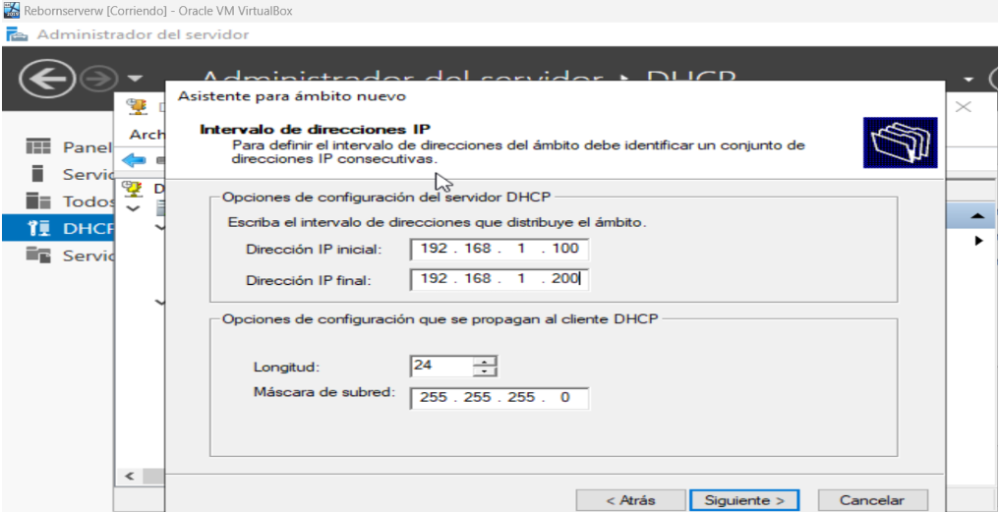
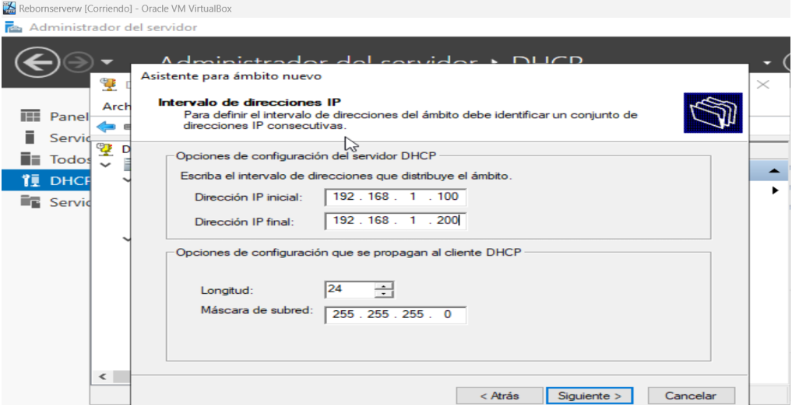
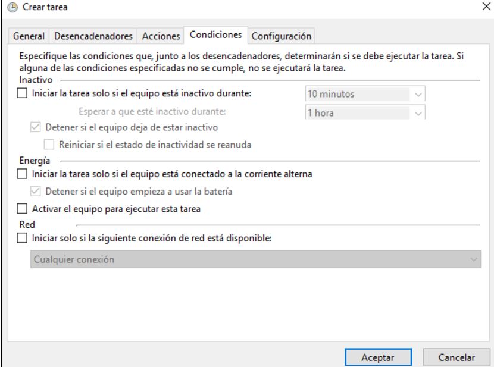

Instalación de MV Windows servers
Configurar servidor DHCP
 

Configuración de Raid


Configurar el visor de eventos de Windows Server para registrar solo eventos críticos del servidor.
Reistros de windows - Sistema
Sistema - filtrar registro actual
Seleccionamos Crítico - Aceptar

Panel derecho - Crear vista personalizada
Seleccionamos Aplicación
Agregamos un nombre - Aceptar
En vistas personalizadas vemos el evento creado
Establecer alertas automáticas para fallos en servicios o hardware.
Copias de Seguridad
Programar actualizaciones

